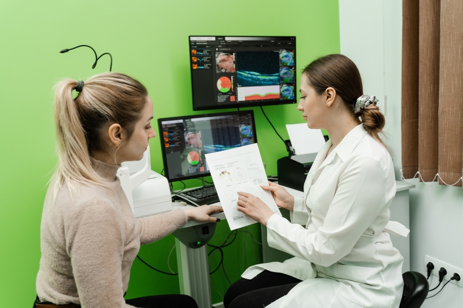
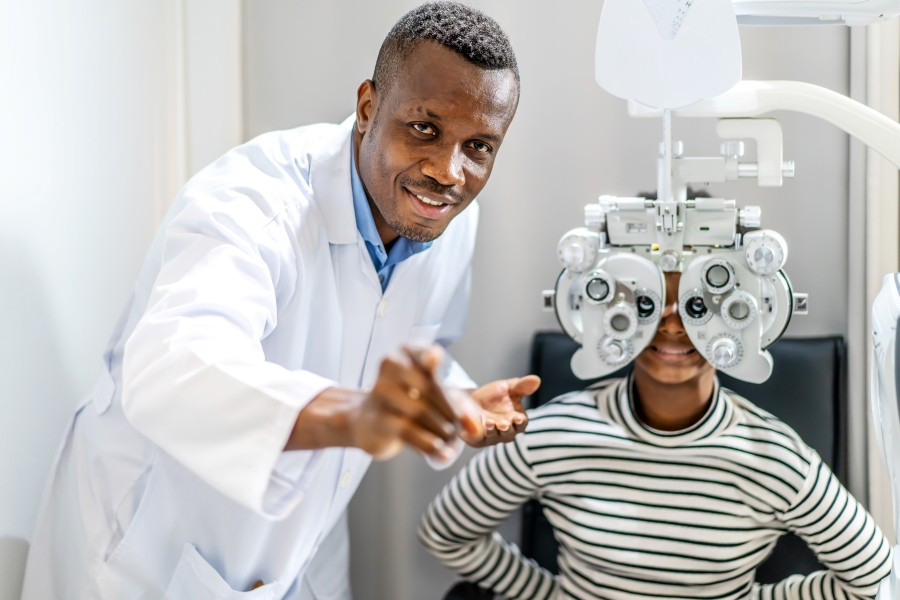
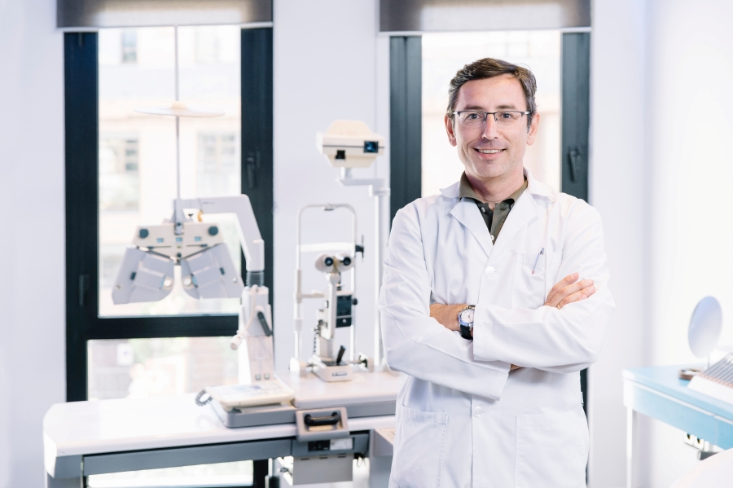
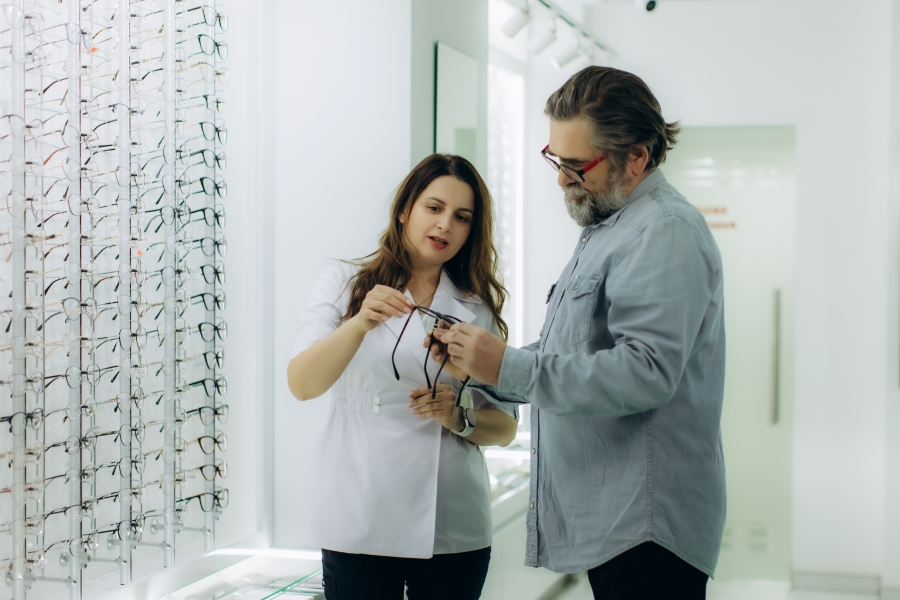
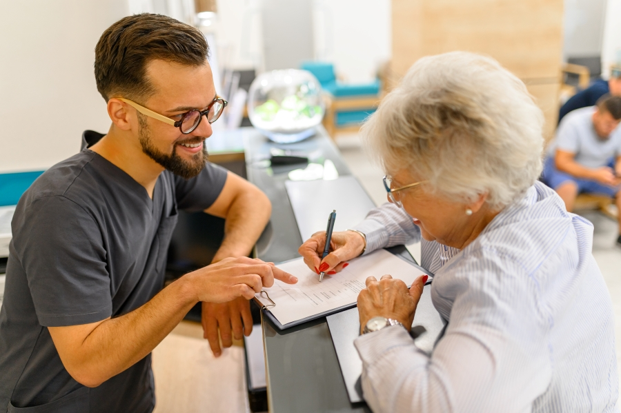

Meet Your New Eyecare Team!

Dr. Melissa Javali (OD, Pediatric & Family Optometry)
Dr. Melissa Javali has over 15 years of clinical experience in family and paediatric eye care. After earning her Doctor of Optometry degree from a leading Australian optometry school, she completed additional professional development in myopia control, and vision therapy.

Dr. Daniel Wilson (BOptom, Paediatric Optometrist)
Vcare Opticals is pleased to welcome Dr. Daniel Wilson, a qualified Pediatric Optometrist, to our team. With extensive experience in children’s vision care, Dr. Wilson focuses on early detection of vision problems, including short sightedness, long sightedness, eye coordination issues, and digital eye strain. His friendly and patient centred approach helps children feel comfortable and relaxed during eye examinations.

Dr. Alan Koya (BOptom)
With more than three decades in professional practice, Dr. Alan Koya is widely respected for his expertise in diagnostic optometry, ocular disease detection, and vision rehabilitation. Dr. Koya frequently collaborates with ophthalmologists and general practitioners to ensure holistic patient care, particularly for individuals with chronic health conditions like diabetes or hypertension.

Sarah Ravie (Optical Dispenser & Lens Specialist)
Sarah Ravie is a highly skilled optical dispenser with over 12 years of hands‑on experience helping clients choose eyewear that blends comfort, functionality, and personal style.

Emiliano Brooklin (Receptionist)
As the first point of contact at Vcare Opticals, Emi sets a warm and welcoming tone for every patient who walks in. With professional experience in customer relations and medical reception, he ensures daily operations run smoothly and that every visitor receives prompt, respectful, and helpful service.